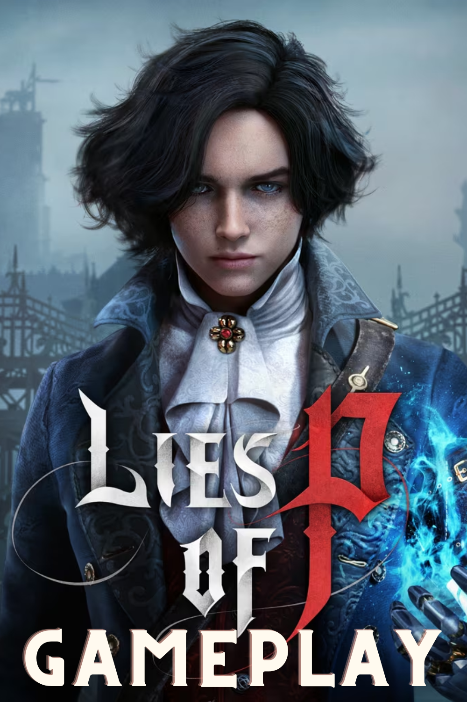
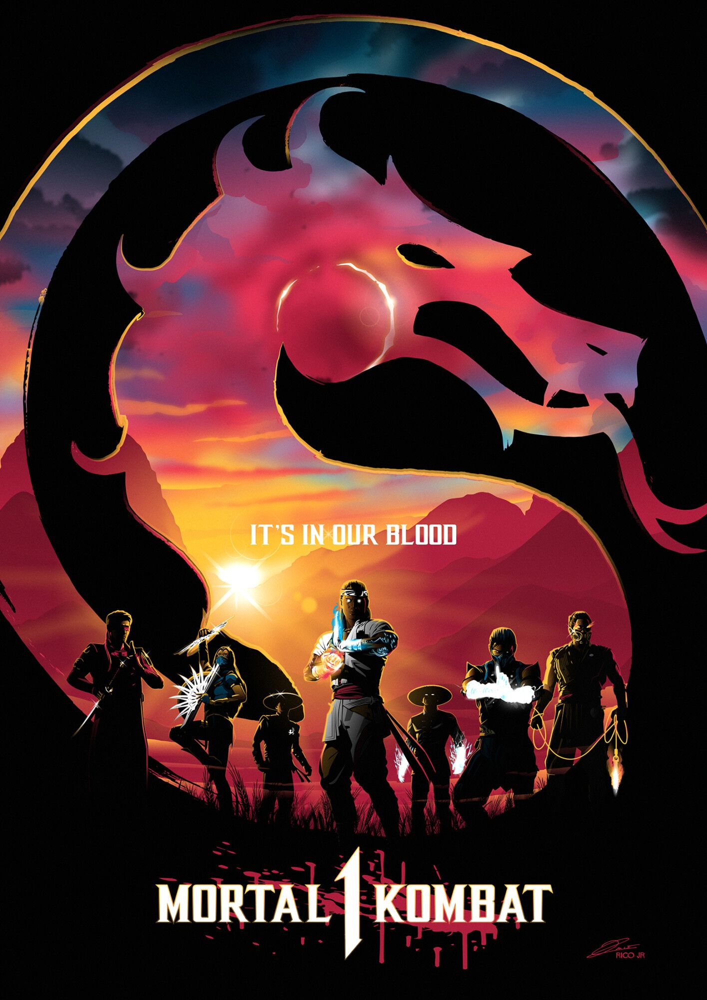
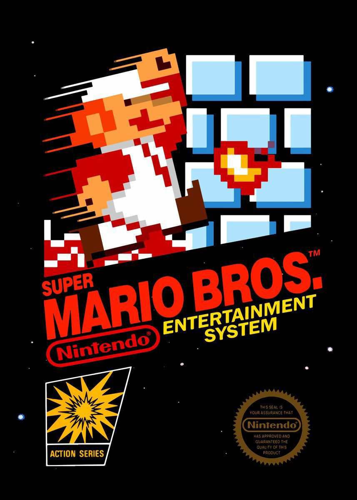

Acerca de:
Los videojuegos son una forma de entretenimiento interactivo que involucra a los jugadores en un mundo virtual. Estos juegos se desarrollan en diversas plataformas, como computadoras, consolas de videojuegos, dispositivos móviles y más. Los videojuegos suelen presentar una variedad de desafíos, objetivos y tramas que los jugadores deben superar o explorar.
Un componente esencial de los videojuegos es la interactividad, lo que significa que los jugadores tienen un grado significativo de control sobre lo que sucede en el juego. Esto puede incluir la toma de decisiones, la resolución de rompecabezas, la competencia contra otros jugadores o la exploración de mundos virtuales. Los videojuegos también pueden abarcar una amplia gama de géneros, desde aventuras y juegos de rol hasta juegos de disparos, deportes, simuladores y más.
A lo largo de los años, los videojuegos han evolucionado tanto en términos de gráficos como de tecnología, lo que ha llevado a la creación de experiencias de juego cada vez más inmersivas y realistas. Además del entretenimiento, los videojuegos también se utilizan en campos como la educación, la terapia y la capacitación, ya que pueden proporcionar un entorno interactivo para aprender y practicar habilidades.
En resumen, los videojuegos son una forma de entretenimiento digital que permite a los jugadores sumergirse en mundos virtuales, interactuar con ellos y disfrutar de una variedad de experiencias interactivas.
Ultimos lanzamientos
-
Lies of P
Ambientada en la era de la Belle Époque, Lies of P le da un giro oscuro al conocido cuento de Pinocho. Despertado por una voz misteriosa, Pinocho debe encontrar la manera de salvar la ciudad de Krat de ser asolada por los títeres. Pinocho, con su corazón especial, aprende a convertirse en un verdadero humano mintiendo.
Género: Aventura de acción / Hack and Slash / Tipo Souls
Trailer oficial
-
Mortal Kombat 1
Nueva entrega de la veterana saga de lucha de NetherRealm Studios. Descubre un nuevo universo de Mortal Kombat creado por Liu Kang, Dios del Fuego. Mortal Kombat 1 abre paso a una nueva era de esta icónica saga con un nuevo sistema de kombate, modos de juego y fatalities.
Género: Lucha / Lucha 2D
Trailer oficial
Juegos Retro
-
Super Mario Bros
En 1985 apareció Super Mario Bros, que supuso un punto de inflexión en el desarrollo de los juegos electrónicos, ya que la mayoría de los juegos anteriores sólo contenían unas pocas pantallas que se repetían en un bucle y el objetivo simplemente era hacer una alta puntuación. El juego desarrollado por Nintendo supuso un estallido de creatividad. Por primera vez teníamos un objetivo y un final en un videojuego. En los años posteriores otras compañías emularon su estilo de juego.
Género: Plataformas
-
Pac Man
"Pac-Man" es un icónico videojuego de arcade lanzado por Namco en 1980. Creado por el diseñador de videojuegos japonés Toru Iwatani, Pac-Man se convirtió en uno de los juegos más influyentes y populares de la historia de los videojuegos.
Género: Videojuego de acción, maze video game